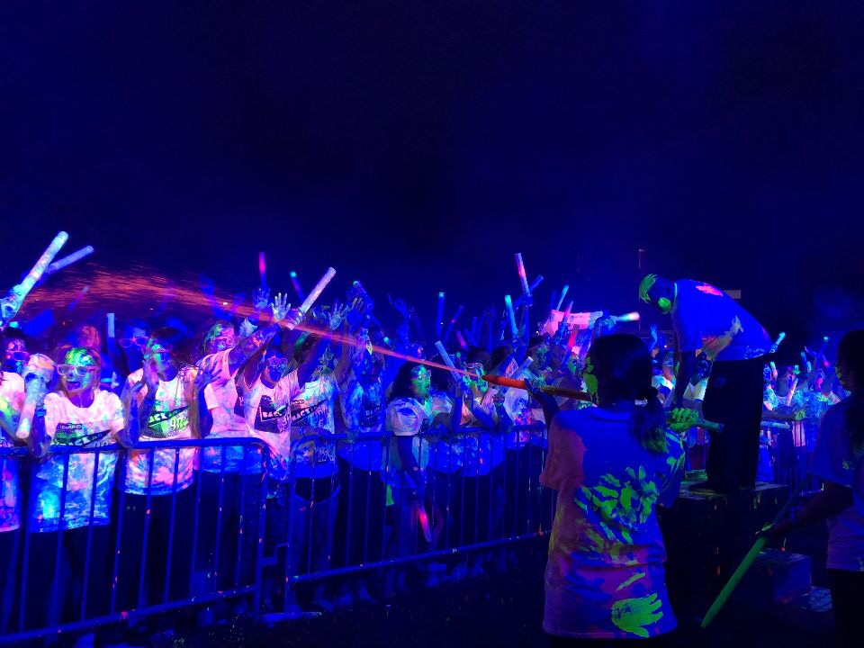
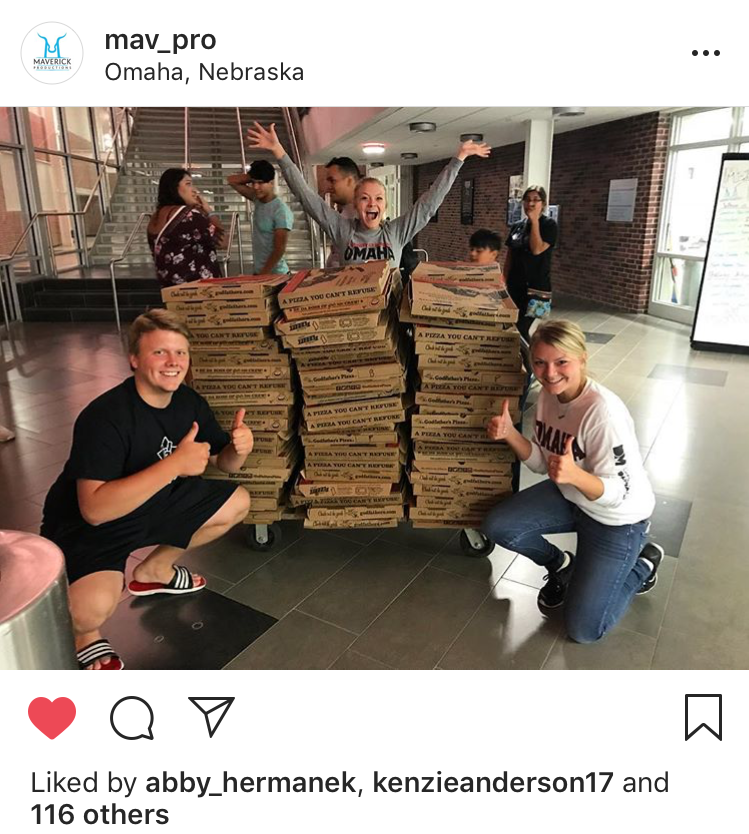
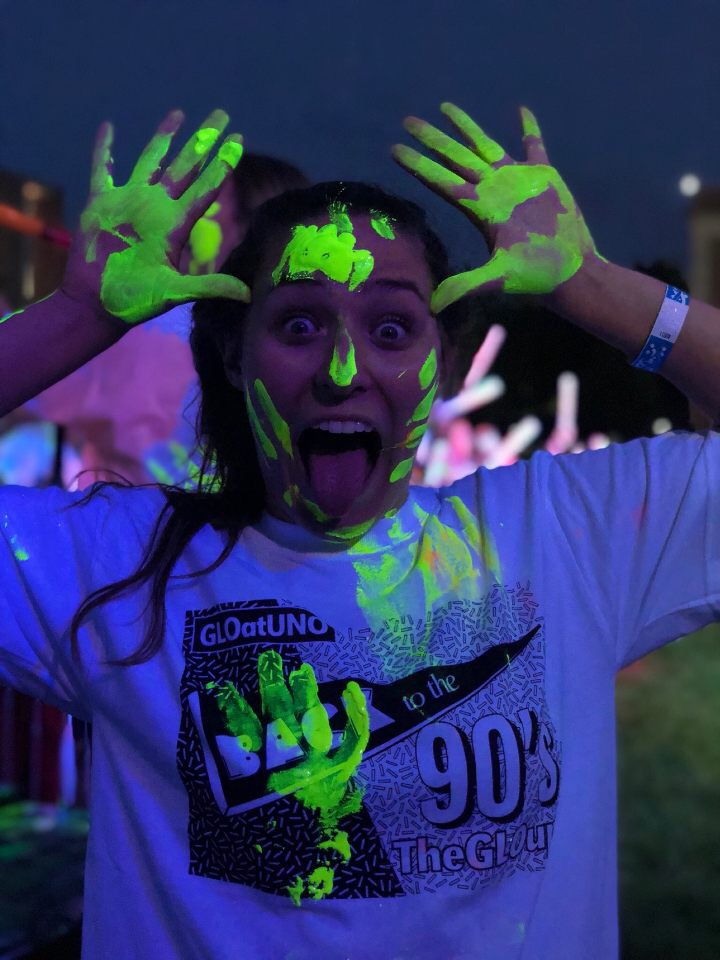

All About Maverick Productions!
At the University of Nebraska - Omaha, there are many student organizations for people to get involved on campus. One student organization that plans events on campus is Maverick Productions! Maverick Productions, also called Mav Pro, is a student programming organization that has been responsible for planning events whether they are large or small. This year, there are three members that make up the executive team. These members put all their hard work and dedication into planning these events with other members with the organization. Some of the most memorable events from the past year include GLO at UNO, the Spring Concert with the rapper Logic, Mavs After Dark, and many more. Below are pictures from some of these previous events to show all of the cool memories that were made by students.
  Check out the calendar posted on the UNO website to find the closest events near you!